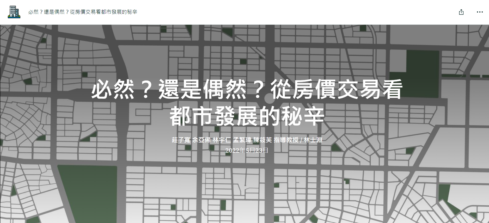

Interactive Population Density Map
Collecting population data and village shapefiles to determine population density in Taiwan, followed by converting each feature into GeoJSON format. Finally, utilizing Leaflet to develop an interactive map of Taiwan that includes functionalities such as zoom-in, fixed pop-ups, and a legend.
GitHub linkYouBike Trip Analysis
A python project about Using web scraping techniques to extract real-time YouBike data at one-minute intervals, we then employ pandas for data structuring and cleansing, followed by leveraging matplotlib to generate time series line charts. To showcase the outcome, the folium package is utilized for crafting an interactive map, enhancing user engagement.
GitHub linkVisualize 3D Building in Taipei
This project involves employing Indexed 3D Scene Layers to interface with a 3D basemap using the ArcGIS API for JavaScript. The project possess various functionalities, including weather simulation, sunshine modeling, location search, and basemap toggling, etc.
GitHub link Medium linkHousing Prices Animation
This project arranges Taipei's Price Registration data from 2012 to 2019 and utilizes the ArcGIS API for JavaScript for visualization. Each point signifies a transaction record, with varying colors representing different unit price categories and the size indicating the time of the trade occurrence.
GitHub linkStoryMap
This StoryMap, which secured first place in a 2022 Taiwan competition, reveals the secrets behind housing prices and their connection to urban planning. By employing 3D visualization techniques, side accordions, and swipe maps, we make the information easily accessible and comprehensible for readers.
 See full StoryMapUrban and Rural Mapping
As a student majoring in Land Economics within the Urban Planning department, Planning Practice is a one-year compulsory course time-consuming but offers significant benefits. During our sophomore year, we simulated an urban planning in Taipei City, and in our junior year, we implemented a rural planning in New Taipei City. The following showcases my GIS work as part of the team.
Click "See more" to explore additional spatial statistics projects!
 See more
See more
Spatial Statistics
The map displayed below presents the outcome of a hydrological analysis conducted in ArcGIS Pro. In this analysis, we first determine the flow direction and length using DEM open data. We then identify the points of flow accumulation and assign an order to each flow. In the map, higher numbers indicate flows with larger scales.
Click "See more" to explore additional full map works!
 See more
See more